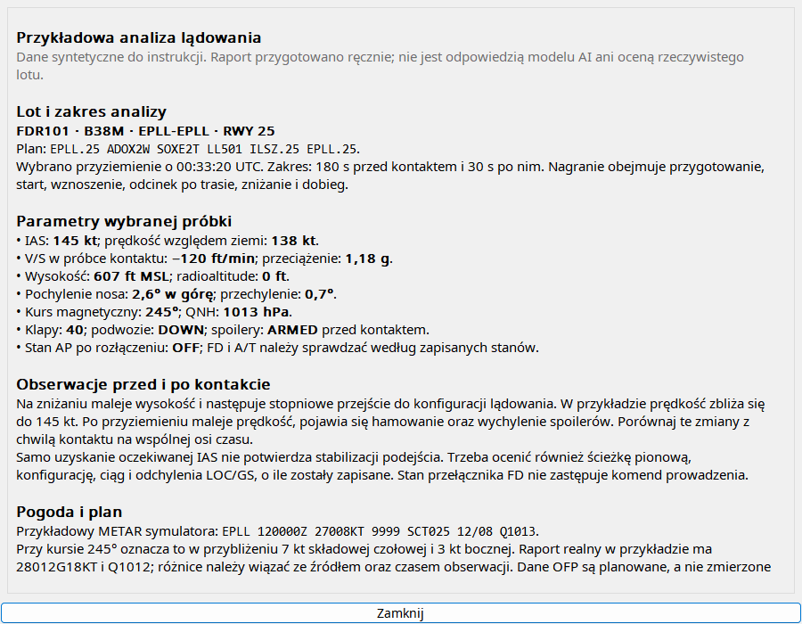
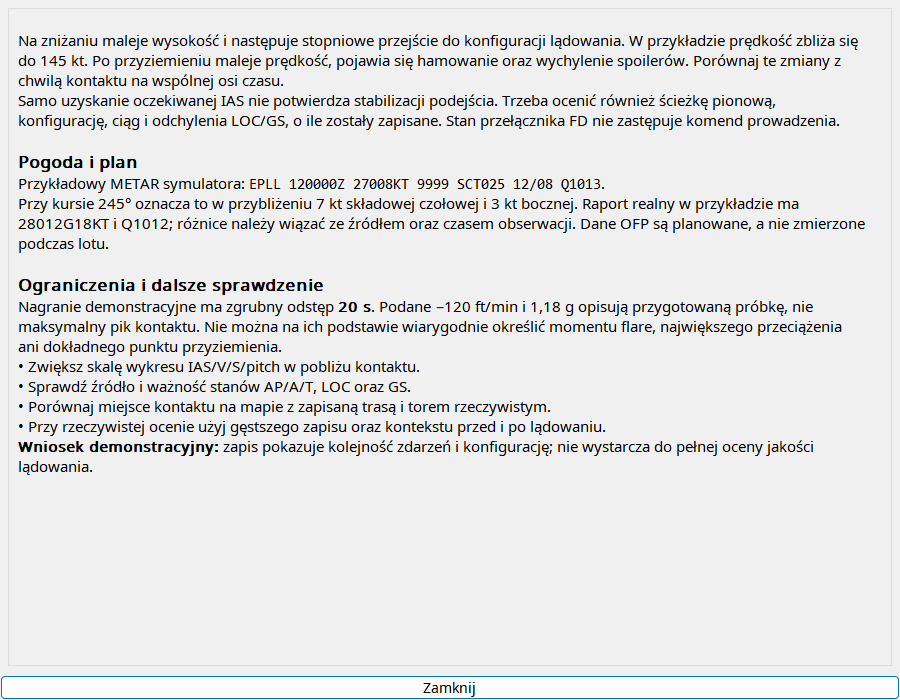

Zacznij od wybrania w³aœciwego startu lub l¹dowania, zw³aszcza po touch-and-go. SprawdŸ zakres próbek, pogodê i plan, a dopiero potem uruchom ¿¹danie. Model otrzymuje instrukcjê odpowiedzi w jêzyku aplikacji oraz rozdzielenia danych planowanych od pomiarów. Gotowy raport jest zapisywany przy zdarzeniu; ponowne otwarcie nie wysy³a nowego zapytania. Shift z akcj¹ analizy s³u¿y nowemu raportowi. Weryfikuj wnioski na wykresach — brak próbki szczytu nie jest dowodem ³agodnego kontaktu.
Wybierz zdarzenie, skonfiguruj dostawcê i poproœ o analizê. To pomoc szkoleniowa symulatora; model mo¿e siê myliæ.
| Opcja / czynnoœæ | Dzia³anie i ograniczenia |
|---|---|
| Okna | Osobno przed/po kontakcie. Start domyœlnie 60/30 s, l¹dowanie 180/30 s. Ka¿de pole 1–300 s, ograniczone zakresem danych. |
| Dane | Dostêpna telemetria i kontekst planu/FMC/pogody. Plan jest oddzielony od pomiaru; braków nie dopisuje siê dla kompletnoœci raportu. |
| Jêzyk | Prompt ¿¹da jêzyka aplikacji, zachowuj¹c identyfikatory lotnicze. Model mo¿e nie wykonaæ instrukcji. |
| Dostawca | Codex CLI, Gemini lub Ollama; logowanie/us³ugê skonfiguruj osobno. Kontekst i timeout ograniczaj¹ zapytanie. |
| Raport | Natywnie formatowany Markdown, zapisywany przy zdarzeniu przez analizê. Odczyt zapisanego raportu nie wymaga nowej odpowiedzi. |
| Ocena | SprawdŸ oœ czasu. Próbkowanie mo¿e pomin¹æ szczyt uderzenia; oderwanie to nie pocz¹tek rotacji, stabilna IAS nie jest automatycznie VREF. |

